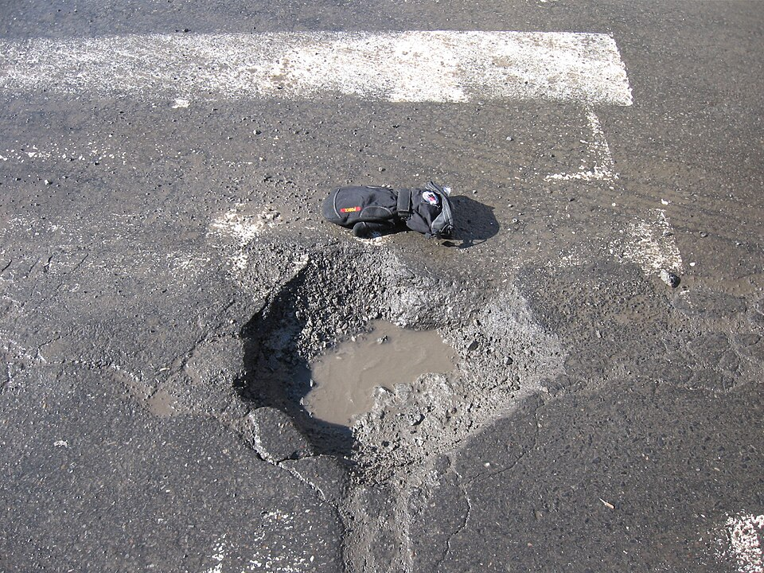
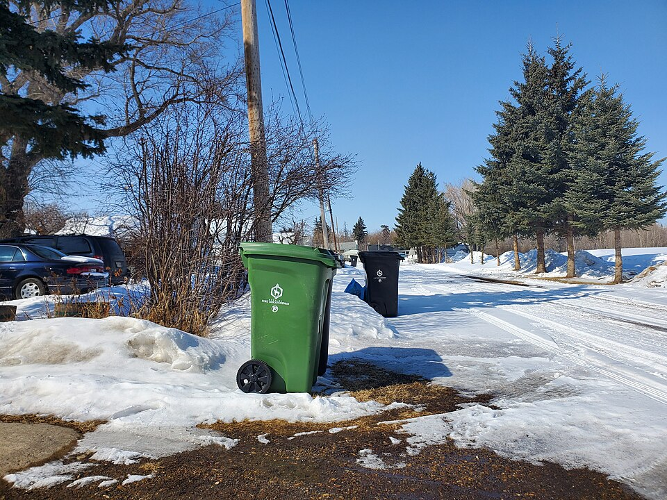
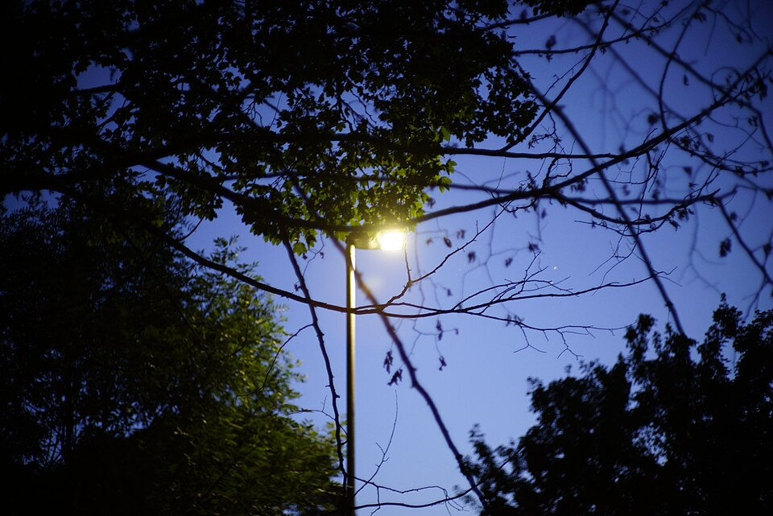
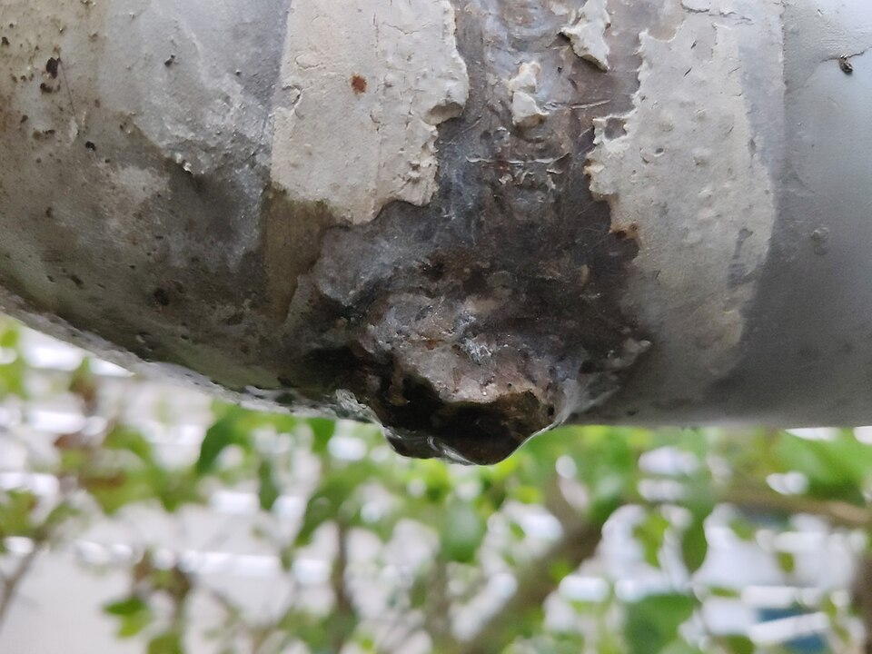
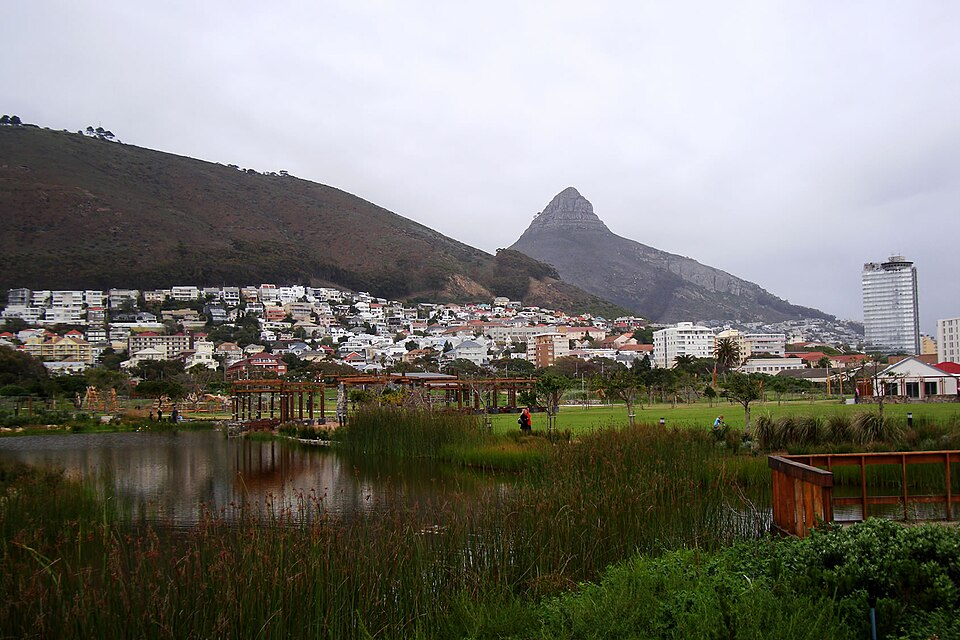
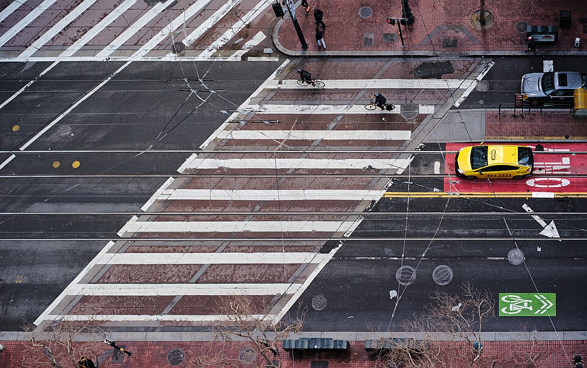

Ciudad más segura
Ayuda a identificar problemas en tu entorno.

PARTICIPACIÓN CIUDADANA · PUNO
Reporta problemas en tu ciudad y contribuye a construir espacios más limpios, seguros y ordenados para todos.
Ayuda a identificar problemas en tu entorno.
Tu voz es parte del cambio que necesita Puno.
Contribuye al cuidado de nuestros espacios.
Consulta el estado de tus reportes.
CUIDEMOS NUESTRA CIUDAD
Identifica el problema.
El primer paso está en tus manos.

Calles en mal estado y pistas deterioradas.

Basura acumulada y contenedores llenos.

Luminarias dañadas o sin funcionamiento.

Fugas de agua y problemas de saneamiento.

Parques, jardines y espacios públicos.
Aún no disponible
Situaciones que afectan la convivencia.
Aún no disponibleLas imágenes de categorías son referenciales. Áreas verdes y Seguridad y otros aún no están habilitadas en el formulario.
UN PROCESO SENCILLO
Adjunta una fotografía, elige la categoría y confirma la ubicación del problema.
El reporte se asigna al área responsable según la categoría seleccionada.
Entra a Mis reportes para consultar el estado y los detalles de tu incidencia.
Versión de prueba: el registro de incidencias está disponible. La atención por entidades y los cambios de estado aún son simulados; no representan atención institucional real.
El mapa público aún no está disponible. Puedes consultar la ubicación de cada incidencia en el detalle de tus reportes.